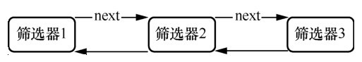

过滤器
.NET Core中有五个默认过滤器，分别是异常过滤器、行为过滤器、结果过滤器、资源过滤器、授权过滤器。所有过滤器一般有同步和异步两个版本。这里只记录异步的过滤器。
1. 异常过滤器 IAsyncExceptionFilter
一个项目中，异常过滤器如果存在多个，只有最后注册的异常过滤器才会生效。
示例：
public class MyExceptionFilter: IAsyncExceptionFilter
{
public Task OnExceptionAsync(ExceptionContext context)
{
Exception ex = context.Exception;
string message = ex.ToString();
ObjectResult result = new ObjectResult(new
{
code = 500,
message = message
});
result.StatusCode = 500;
context.Result = result;
context.ExceptionHandled = true;
return Task.CompletedTask;
}
}
全局注册过滤器
builder.Services.Configure<MvcOptions>( options =>
{
options.Filters.Add<MyExceptionFilter>();
});
2. 行为过滤器 IAsyncActionFilter
一个项目中可以注册多个行为过滤器，这些行为过滤器组成一个链，上一个行为过滤器执行完了再执行下一个。如下图所示：

示例1：
public class ActionFilter1 : IAsyncActionFilter
{
public async Task OnActionExecutionAsync(ActionExecutingContext context, ActionExecutionDelegate next)
{
Console.WriteLine("操作过滤器1：开始执行");
ActionExecutedContext r = await next();
if (r.Exception != null)
{
Console.WriteLine("操作过滤器1：执行失败");
}
else
{
Console.WriteLine("操作过滤器1：执行成功");
}
}
}
示例2：
public class ActionFilter2 : IAsyncActionFilter
{
public async Task OnActionExecutionAsync(ActionExecutingContext context, ActionExecutionDelegate next)
{
Console.WriteLine("操作过滤器2：开始执行");
ActionExecutedContext r = await next();
if(r.Exception != null)
{
Console.WriteLine("操作过滤器2：执行失败");
}
else
{
Console.WriteLine("操作过滤器2：执行成功");
}
}
}
全局注册行为过滤器：
builder.Services.Configure<MvcOptions>( opt =>
{
opt.Filters.Add<ActionFilter1>();//注册行为过滤器1
opt.Filters.Add<ActionFilter2>();//注册行为过滤器2
});
随便请求一个接口，打印结果如下：